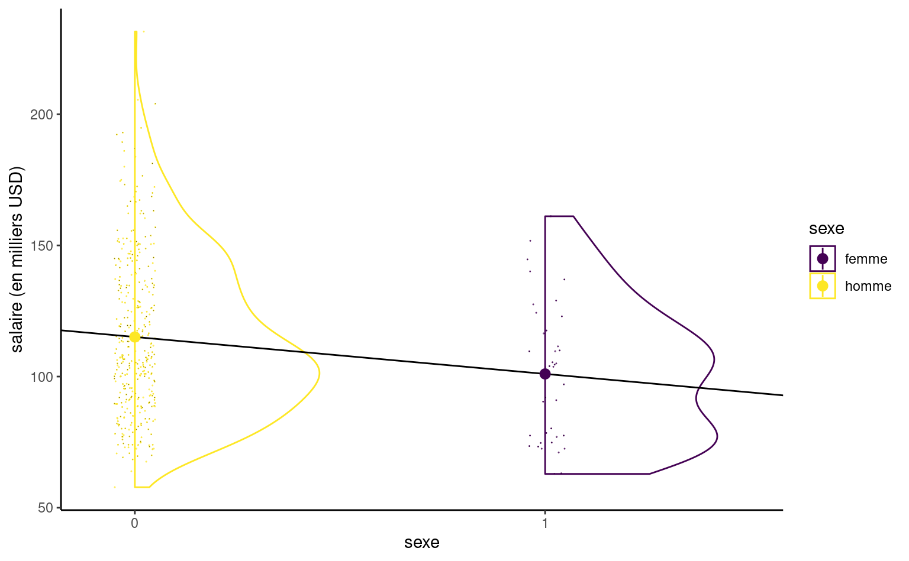
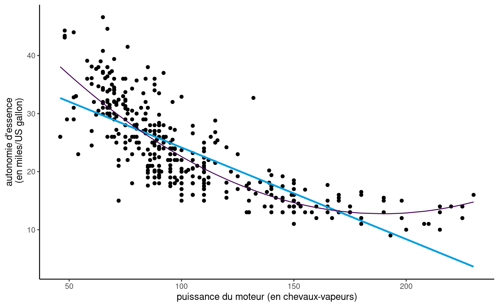

9 Régression linéaire
Les modèles de régression servent à modéliser la moyenne1 d’une variable réponse \(Y\) en fonction de \(p\) variables explicatives (appelées parfois régresseurs ou covariables) à l’aide d’une équation de la forme \[\begin{align*} \underbrace{\mathsf{E}(Y_i \mid \mathbf{X}_i)}_{\text{moyenne de la $i$e réponse}}=\underbrace{\beta_0 + \beta_1\mathrm{X}_{i1} + \cdots + \beta_p \mathrm{X}_{ip}}_{\text{combinaison linéaire de variables explicatives}}. \end{align*}\] où \(\mathrm{X}_{ij}\) est la \(i\)e ligne, \(j\)e colonne du tableau contenant variables explicatives (chaque colonne correspond à une variable).
Dans le modèle de régression ordinaire, toutes les observations qui ont les mêmes charactéristiques (c’est-à-dire, les mêmes valeurs des variables explicatives) ont la même moyenne, même si les observations ne sont pas identiques.
On peut ajouter un terme d’erreur qui sert à tenir compte du fait qu’aucune relation linéaire exacte ne lie \(\mathbf{X}\) et \(Y\), ou que les mesures de \(Y\) contiennent des erreurs. Ce terme d’erreur aléatoire \(\varepsilon\), souvent supposé tiré d’une loi normale, servira de base à l’inférence car il permettra de quantifier l’adéquation entre notre modèle et les données.
On peut réécrire le modèle linéaire en terme de l’erreur pour un échantillon aléatoire de taille \(n\): dénotons par \(Y_i\) la valeur de \(Y\) pour le sujet \(i\), et \(\mathrm{X}_{ij}\) la valeur de la \(j\)e variable explicative du sujet \(i\). Le modèle de régression linéaire est \[ \underbrace{Y_i}_{\text{réponse}} = \underbrace{\beta_0 + \beta_1 \mathrm{X}_{i1} + \ldots + \beta_p \mathrm{X}_{ip}}_{\text{moyenne}} + \underbrace{\varepsilon_{i}}_{\text{erreur}} \tag{9.1}\] où \(\varepsilon_i\) est le terme d’erreur \((i=1, \ldots, n\)). Si aucune hypothèse sur la loi aléatoire de l’erreur n’est spécifiée, on fixe a minima la moyenne théorique du terme d’erreur à zéro car on postule qu’il n’y a pas d’erreur systématique.
Le postulat de normalité sert à exprimer ce fait et à caractériser les déviations possibles: on suppose que la probabilité d’observer une valeur supérieure ou inférieure est la même, mais que les déviations importantes par rapport à la moyenne sont moins plausibles. Ce postulat de normalité en est un de convenance: on pénalise les déviations par rapport à \(\mu\) et l’écart-type commun à toutes les observations, \(\sigma\), mesure cette écart. S’il y a peu de bruit et que la relation linéaire entre les variables explicatives et la réponse est très forte (capturée par la corrélation entre variables), le modèle reflètera adéquatement les données et l’écart-type estimé sera faible.
La flexibilité du modèle linéaire vient de sa formulation: on spécifie la moyenne de la réponse \(Y\) comme combinaison linéaire de variables explicatives, dont le choix est arbitraire. Il est important de remarquer que ce modèle est linéaire dans les coefficients \(\boldsymbol{\beta}\in \mathbb{R}_{p+1}\), pas dans les variables explicatives. Ces dernières sont quelconques et peuvent être des fonctions (non)-linéaires d’autres variables explicatives, par exemple \(\mathrm{X}=\log(\texttt{annees})\), \(\mathrm{X}=\texttt{puissance}^2\) ou \(\mathrm{X}= \mathsf{I}_{\texttt{homme}}\cdot\mathsf{I}_{\texttt{titulaire}}\). C’est ce qui fait la flexibilité du modèle linéaire: ce dernier est principalement employé aux fins suivantes:
- Comprendre comment et dans quelle mesure les variables explicatives \(\mathbf{X}\) influencent la moyenne de la réponse \(Y\) (description).
- Quantifier l’influence des variables explicatives \(\mathbf{X}\) sur la régressande \(Y\) et tester leur significativité.
- Prédire les valeurs de \(Y\) pour de nouveaux ensembles de covariables \(\mathbf{X}\).
9.1 Exemple et motivation
Le modèle linéaire est sans conteste le modèle statistique le plus couramment employé. Une grande panoplie de tests statistiques (tests-t, analyse de variance) sont des cas particuliers de régression linéaire.
Afin de rendre plus tangible le concept et les notions qui touchent aux modèles linéaires, on présentera ces notions dans le cadre d’un exemple. On s’intéresse à la discrimination salariale dans un collège américain, au sein duquel une étude a été réalisée pour investiguer s’il existait des inégalités salariales entre hommes et femmes. Le jeu de données salaireprof contient les variables suivantes
salaire: salaire de professeurs pendant l’année académique 2008–2009 (en milliers de dollars USD).echelon: échelon académique, soit adjoint (adjoint), aggrégé (aggrege) ou titulaire (titulaire).domaine: variable catégorielle indiquant le champ d’expertise du professeur, soit appliqué (applique) ou théorique (theorique).sexe: indicateur binaire pour le sexe,hommeoufemme.service: nombre d’années de service.annees: nombre d’années depuis l’obtention du doctorat.
Une analyse exploratoire des données est de mise avant d’ébaucher un modèle. Si le salaire augmente au fil des ans, on voit que l’hétérogénéité change en fonction de l’échelon et qu’il y a une relation claire entre ce dernier et le nombre d’années de service (les professeurs n’étant éligibles à des promotions qu’après un certain nombre d’années). Les professeurs adjoints qui ne sont pas promus sont généralement mis à la porte, aussi il y a moins d’occasions pour que les salaires varient sur cette échelle.
Ainsi, le salaire augmente avec les années, mais la variabilité croît également. Il y a peu de femmes dans l’échantillon: moins d’information signifie moins de puissance pour détecter de petites différences de salaire. Si on fait un tableau de contingence de l’échelon et du sexe, on peut calculer la proportion relative homme/femme dans chaque échelon: 16% des profs adjoints, 16% pour les aggrégés, mais seulement 7% des titulaires alors que ces derniers sont mieux payés en moyenne.
| adjoint | aggrege | titulaire | |
|---|---|---|---|
| femme | 11 | 10 | 18 |
| homme | 56 | 54 | 248 |
Le modèle linéaire simple n’inclut qu’une variable explicative et consiste en une droite d’équation \(y=\beta_0 + \beta_1 \mathrm{X}\) qui passe à travers un nuage de points. La Figure 9.2 montre la droite de régression dans le nuage de points formé par les couples \(\{\mathrm{X}_i, y_i\}\), où \(y_i\) est le salaire et \(\mathrm{X}\) est service.
Programmation: Pour ajuster un modèle linéaire avec R, on utilise la fonction lm. Le premier argument est une formule, sous la forme y ~ x où y est la variable réponse et x la variable explicative. La fonction utilisera (si disponible) les variables disponibles dans la base de données spécifiée via l’argument data. Ici, notre variable réponse est le salaire et nous tentons d’expliquer ce dernier en fonction du nombre d’années de service, ici représenté par la variable continue service.
data(salaireprof, package = "hecmulti")
modlin1 <- lm(salaire ~ service, data = salaireprof)
summary(modlin1)
Call:
lm(formula = salaire ~ service, data = salaireprof)
Residuals:
Min 1Q Median 3Q Max
-81.933 -20.511 -3.776 16.417 101.947
Coefficients:
Estimate Std. Error t value Pr(>|t|)
(Intercept) 99.9747 2.4166 41.37 < 2e-16 ***
service 0.7796 0.1104 7.06 7.53e-12 ***
---
Signif. codes: 0 '***' 0.001 '**' 0.01 '*' 0.05 '.' 0.1 ' ' 1
Residual standard error: 28.58 on 395 degrees of freedom
Multiple R-squared: 0.1121, Adjusted R-squared: 0.1098
F-statistic: 49.85 on 1 and 395 DF, p-value: 7.529e-12Une fois le modèle estimé, on peut extraire les coefficients avec la méthode coef, ici via coef(modlin1), ou imprimer un tableau résumé avec summary. Ce dernier contient quatre colonnes qui donnent
- les estimations des paramètres de la moyenne \(\widehat{\beta}\)
- les erreur-types des estimations \(\mathsf{se}(\widehat{\beta})\) (qui représente leur incertitude)
- la statistique \(t\) obtenue en comparant la valeur de \(\widehat{\beta}\) à la valeur sous l’hypothèse nulle \(\beta=0\), standardisée par l’erreur-type, \(t=\widehat{\beta}/\mathsf{se}(\widehat{\beta})\).
- la valeur-\(p\) pour le test \(\beta_i=0\).
Notez qu’on ignore systématiquement les valeurs-\(p\) pour la première ligne qui correspond à l’ordonnée à l’origine (Intercept).
Une infinité de droites pourraient passer dans le nuage de points; il faut donc choisir la meilleure droite (selon un critère donné). Le critère des moindres carrés, qui consiste à minimiser la somme du carré des erreurs (soit la somme de la distance verticale entre la droite et les observations) permet d’obtenir des estimations des paramètres. La solution du problème d’optimisation est explicite et facilement calculée par n’importe lequel logiciel.
Les estimateurs des moindres carrés ordinaires \(\widehat{\boldsymbol{\beta}}=(\widehat{\beta}_0, \ldots, \widehat{\beta}_p)\) sont les paramètres qui minimisent simultanément la distance euclidienne entre les observations \(y_i\) et les valeurs ajustées \[\begin{align*} \widehat{y}_i &= \widehat{\beta}_0 + \widehat{\beta}_1 \mathrm{X}_{i1} + \cdots + \widehat{\beta}_p \mathrm{X}_{ip}, \qquad i =1, \ldots, n. \end{align*}\] En d’autres mots, les estimateurs des moindres carrés sont la solution du problème \[\begin{align*} \widehat{\boldsymbol{\beta}} &=\min_{\boldsymbol{\beta} \in \mathbb{R}^{p+1}}\sum_{i=1}^n (y_i-\widehat{y}_i)^2 \end{align*}\]
Que représente les moindres carrés en deux dimensions? L’estimateur est celui qui minimise la somme du carré des résidus ordinaires. Le \(i\)e résidu ordinaire \(e_i = y_i -\widehat{y}_i\), obtenu via resid(), est la distance verticale entre un point \(y_i\) et la valeur ajustée \(\widehat{y}_i\), soit les traits bleus de la Figure 9.3. C’est cette distance au carré qu’on veut minimiser.
9.2 Interprétation des paramètres du modèles
Que représentent les paramètres \(\boldsymbol{\beta}\) du modèle linéaire? Dans le cas simple présenté dans la Figure 9.2 où l’équation de la droite est de la forme \(\widehat{Y} = \widehat{\beta}_0 + \widehat{\beta}_1\mathrm{X}_1\), \(\beta_0\) est l’ordonnée à l’origine (la valeur moyenne de \(Y\) quand \(\mathrm{X}_1=0\)) et \(\beta_1\) est la pente, soit l’augmentation moyenne de \(Y\) quand \(\mathrm{X}_1\) augmente d’une unité.
Dans certains cas, l’interprétation de l’ordonnée à l’origine n’est pas valide car c’est un non-sens: la valeur \(\mathrm{X}_1=0\) n’est pas plausible (par exemple, si \(\mathrm{X}_1\) est la taille d’un humain). De même, il peut arriver qu’il n’y ait pas d’observations dans le voisinage de \(\mathrm{X}_1=0\), même si cette valeur est plausible; on parle alors d’extrapolation.
Il est d’usage d’inclure une colonne de uns pour capturer l’ordonnée à l’origine \(\beta_0\): cette dernière est incluse par défaut et permet de s’assurer que les résidus ordinaires \(e_i = Y_i - \widehat{\mu}_i\) ont moyenne nulle, comme le sous-tend notre spécification pour l’erreur. Elle joue donc un rôle particulier. Le modèle de base, le plus simple qui soit, reviendrait à n’inclure que le terme \(\beta_0\) et on obtiendrait alors comme estimation la moyenne de toutes les observations, avec l’estimé \(\widehat{\beta}_0 = \overline{y}\). On peut vérifier que la moyenne des erreurs est bien zéro.
# Si on inclut une ordonnée à l'origine, la moyenne des erreurs est nulle
mean(resid(modlin1))[1] -2.351804e-15# Modèle de base avec uniquement l'ordonnée à l'origine
# beta0 estimée comme moyenne
coef(lm(salaire ~ 1, data = salaireprof))(Intercept)
113.7065 mean(salaireprof$salaire)[1] 113.7065Dans notre exemple, l’équation de la droite ajustée de la Figure 9.2 est \[ \widehat{\texttt{salaire}} = 99.9746529 + 0.7795691\texttt{service}. \]
Ainsi, le salaire moyen d’un nouveau professeur serait 99975 dollars, tandis que l’augmentation moyenne annuelle du salaire est 780 dollars.
Si la variable réponse \(Y\) doit être continue, il n’y a aucune restriction pour les variables explicatives. On peut aussi considérer des variables explicatives binaires, qui sont encodées numériquement à l’aide de 0/1. Par exemple, si on s’intéresse au sexe des professeurs de l’étude, \[ \texttt{sexe} = \begin{cases} 0 , & \text{pour les hommes},\\ 1, & \text{pour les femmes.} \end{cases} \] L’équation du modèle linéaire simple qui n’inclut que cette variable catégorielle à deux niveaux, \(\texttt{sexe}\), s’écrit \(\texttt{salaire} = \beta_0 + \beta_1 \texttt{sexe} + \varepsilon\). Posons \(\mu_0\) le salaire moyen des femmes et \(\mu_1\) celui des heommes. L’ordonnée à l’origine \(\beta_0\) s’interprète comme d’ordinaire: c’est le salaire moyen quand \(\texttt{sexe}=0\), autrement dit \(\beta_0=\mu_0\) puisque femme est la catégorie de référence ici. On peut écrire l’équation de la moyenne théorique conditionnelle pour chacune des catégories, \[\begin{align*} \mathsf{E}(\texttt{salaire} \mid \texttt{sexe})= \begin{cases} \beta_0, & \texttt{sexe}=0 \text{ (femme)}, \\ \beta_0 + \beta_1 & \texttt{sexe}=1 \text{ (homme)}. \end{cases} \end{align*}\] Un modèle linéaire qui contient uniquement une variable binaire \(\mathrm{X}\) comme régresseur équivaut à spécifier une moyenne différente pour deux groupes; la moyenne des femmes est \(\mathsf{E}(\texttt{salaire} \mid \texttt{sexe}=1) = \beta_0 + \beta_1 = \mu_1\) et \(\beta_1=\mu_1-\mu_0\) représente la différence entre la moyenne des hommes et celles des femmes. L’estimateur des moindres carrés \(\widehat{\beta}_0\) est la moyenne empirique du salaire des hommes de l’échantillon et \(\widehat{\beta}_1\) est la différence des moyennes empiriques entre femmes et hommes.

# Catégorie de base: femme (première en ordre alphanumérique)
levels(salaireprof$sexe)[1] "femme" "homme"# Coefficients du modèle: moyenne des femmes et différentiel homme vs ref
coef(lm(salaire ~ sexe, data = salaireprof))(Intercept) sexehomme
101.00241 14.08801 Si on ajuste un modèle de régression linéaire pour les données salaireprof, on obtient un salaire moyen de \(\widehat{\beta}_0=1.01002\times 10^{5}\) dollars USD pour les femmes et une différence moyenne de salaire entre hommes et femmes de \(\widehat{\beta}_1=-1.4088\times 10^{4}\) dollars US. Puisque l’estimé est positif, les femmes sont moins payés: ce modèle n’est en revanche pas suffisant pour déterminer s’il y a inéquité salariale: la Figure 9.2 montre que le nombre d’années de service et l’échelon académique impactent fortement le salaire, or il n’est pas dit que la répartition des sexes au sein des échelons est comparable (et ce n’est pas le cas).
Même si le modèle linéaire simple définit une droite, cette dernière n’a de sens qu’en \(0\) ou \(1\); la Figure 9.4 montre un estimé de la densité et la répartition des points (décalés) dans l’échantillon selon le sexe, avec la moyenne de chacun. On voit bien que la droite passe par la moyenne de chaque groupe.
Plus généralement, il est possible de considérer une variable catégorielle à \(k\) niveaux. Comme pour la variable binaire, on ajoute au modèle \(k-1\) variables indicatrices en plus de l’ordonnée à l’origine: si on veut modéliser \(k\) moyennes, il est logique de n’inclure que \(k\) paramètres. On choisira comme dans l’exemple avec le sexe une catégorie de référence dont la moyenne sera encodée par l’ordonnée à l’origine \(\beta_0\). Les autres paramètres seront des effets différentiels relatifs à cette catégorie. Prenons pour exemple l’échelon académique, une variable catégorielle ordinale à trois niveaux (adjoint, aggrégé, titulaire). On ajoute deux variables binaires \(\mathrm{X}_1 = \mathsf{I}(\texttt{echelon}=\texttt{aggrege})\) et \(\mathrm{X}_2 = \mathsf{I}(\texttt{echelon}=\texttt{titulaire})\); l’élément \(i\) de la colonne \(\mathrm{X}_1\) vaut 1 si le professeur est aggrégé et zéro autrement. Le modèle linéaire \[\begin{align*} \texttt{salaire} \mid \texttt{echelon}=\beta_0 + \beta_1 \mathrm{X}_1+\beta_2\mathrm{X}_2 + \varepsilon, \end{align*}\] et la moyenne théorique conditionnelle du salaire s’écrit \[\begin{align*} \mathsf{E}(\texttt{salaire} \mid \texttt{echelon})= \begin{cases} \beta_0, & \texttt{echelon}=\texttt{adjoint},\\ \beta_0 + \beta_1 & \texttt{echelon}=\texttt{aggrege},\\ \beta_0 + \beta_2 & \texttt{echelon}=\texttt{titulaire}, \end{cases} \end{align*}\] Ainsi, \(\beta_1\) (respectivement \(\beta_2\)) est la différence de salaire moyenne entre professeurs titulaires (respectivement aggrégés) et professeurs adjoints. Le choix de la catégorie de référence est arbitraire et le modèle ajusté est le même: seule l’interprétation des coefficients change. Pour une variable ordinale, il vaut mieux choisir la plus petite ou la plus grande des modalités pour faciliter les comparaisons.
Les modèles que nous avons ajusté jusqu’à maintenant ne sont pas adéquats parce qu’ils ignorent des variables qui sont importantes pour expliquer le modèle: la Figure 9.1 illustre en effet que l’échelon est une composante essentielle pour expliquer les variations de salaire au sein du collège. On peut (et on doit) donc inclure plusieurs variables simultanément pour avoir un modèle adéquat. Avant de procéder, on considère l’interprétation des paramètres quand on utilise plus d’une variable explicative dans le modèle.
Soit le modèle \(Y= \beta_0 + \beta_1 \mathrm{X}_1 + \cdots + \beta_p\mathrm{X}_p + \varepsilon\). L’ordonnée à l’origine \(\beta_0\) représente la valeur moyenne de \(Y\) quand toutes les covariables du modèle sont égales à zéro, \[\begin{align*} \beta_0 &= \mathsf{E}(Y \mid \mathrm{X}_1=0,\mathrm{X}_2=0,\ldots,\mathrm{X}_p=0). \end{align*}\] De nouveau, cette interprétation peut ne pas être sensée ou logique selon le contexte de l’étude. Le coefficient \(\beta_j\) \((j \geq 1)\) peut quant à lui être interprété comme l’augmentation moyenne de la moyenne théorique de la variable réponse \(Y\) quand \(\mathrm{X}_j\) augmente d’une unité, toutes choses étant égales par ailleurs (ceteris paribus). Le coefficient \(\beta_j\) est donc la contribution marginale de \(\mathrm{X}_j\) quand les autres covariables sont incluses dans le modèle. Par exemple, l’interprétation de \(\beta_1\) est \[\begin{align*} \beta_1 &= \mathsf{E}(Y \mid \mathrm{X}_1=x_1+1,\mathrm{X}_2=x_2,\ldots,\mathrm{X}_p=x_p) \\ & \qquad \qquad - \mathsf{E}(Y \mid \mathrm{X}_1=x_1,\mathrm{X}_2=x_2,\ldots,\mathrm{X}_p=x_p) \\ &= \left\{\beta_0 + \beta_1 (x_1+1) + \beta_2 x_2 + \cdots +\beta_p \mathrm{X}_p \right\} \\ & \qquad \qquad -\left\{\beta_0 + \beta_1 x_1 + \beta_2 x_2 + \cdots +\beta_p \mathrm{X}_p \right\} \end{align*}\]
9.2.1 Polynômes
Il n’est pas toujours possible de fixer la valeur des autres colonnes de \(\mathbf{X}\) si plusieurs colonnes contiennent des transformations ou des fonctions d’une même variable explicative. Par exemple, on pourrait par exemple considérer un polynôme d’ordre \(k\) (normalement, \(k\leq 3\) en pratique), \[\begin{align*} Y=\beta_0+ \beta_1 \mathrm{X}+ \beta_2 \mathrm{X}^2 + \ldots +\beta_k \mathrm{X}^k + \varepsilon. \end{align*}\] Si l’on inclut un terme d’ordre \(k\), \(\mathrm{X}^k\), il faut toujours inclure les termes d’ordre inférieur \(1, \mathrm{X}, \ldots, \mathrm{X}^{k-1}\) pour l’interprétabilité du modèle résultant (autrement, cela revient à choisir un polynôme en imposant que certains coefficients soient zéros). L’interprétation des effets des covariables nonlinéaires (même polynomiaux) est complexe parce qu’on ne peut pas « fixer la valeur des autres variables »: l’effet d’une augmentation d’une unité de \(\mathrm{X}\) dépend de la valeur de cette dernière.
Exemple 9.1 (Autonomie d’essence d’automobiles) Considérons un modèle de régression linéaire pour l’autonomie d’essence en fonction de la puissance du moteur pour différentes voitures dont les caractéristiques sont données dans le jeu de données automobiles. Le modèle postulé incluant un terme quadratique est \[
\texttt{autonomie}_i = \beta_0 + \beta_1 \texttt{puissance}_i + \beta_2 \texttt{puissance}_i^2 + \varepsilon_i
\]
Afin de comparer l’ajustement du modèle quadratique, on peut inclure également la droite ajustée du modèle de régression simple qui n’inclut que puissance.
Programmation: On peut ajouter plus d’une variable explicative dans un modèle de régression, en séparantles termes à droite du tilde avec des signes +. Si on veut ajouter le terme quadratique x^2, on peut faire la transformation en enrobant le tout avec I(), comme suit:
data(automobile, package = "hecmodstat")
lm(autonomie ~ puissance + I(puissance^2), data = automobile)
lm(autonomie ~ poly(puissance, degree = 2), data = automobile)Pour inclure un polynôme de degré \(k\) en x, on utilise l’argument poly(x, degree = k). Attention cependant à l’interprétation (le modèle est spécifié, pour des raisons de stabilité numérique, à l’aide de polynôme orthogonaux — les valeurs prédites sont les mêmes, mais les coefficients ne représentent pas la même chose que si on avait x, I(x^2), I(x^3), etc.

automobileÀ vue d’oeil, l’ajustement est meilleur pour le modèle quadratique: nous verrons plus tard à l’aide de test si cette observation est vérifiée statistiquement. On voit aussi dans la Figure 9.5 que l’autonomie d’essence décroît rapidement quand la puissance croît entre \(0\) et \(189.35\), mais semble remonter légèrement par la suite pour les voitures qui un moteur de plus de 200 chevaux-vapeurs, ce que le modèle quadratique capture. Prenez garde en revanche à l’extrapolation là où vous n’avez pas de données (comme l’illustre remarquablement bien le modèle cubique de Hassett pour le nombre de cas quotidiens de coronavirus).
La représentation graphique du modèle polynomial de degré 2 présenté dans la Figure 9.5 peut sembler contre-intuitive, mais c’est une projection en 2D d’un plan 3D de coordonnées \(\beta_0 + \beta_1x-y +\beta_2z =0\), où \(x=\texttt{puissance}\), \(z=\texttt{puissance}^2\) et \(y=\texttt{autonomie}\). La physique et le bon-sens imposent la contrainte \(z = x^2\), et donc les valeurs ajustées vivent sur une courbe dans un sous-espace du plan ajusté, représenté en gris dans la Figure 9.6.
Exemple 9.2 (Inéquité salariale dans un collège américain”) On considère les données salaireprof et un modèle de régression qui inclut le sexe, l’échelon académique, le nombre d’années de service et le domaine d’expertise (appliquée ou théorique).
Si on multiplie le salaire par mille, la moyenne théorique de notre modèle linéaire s’écrit \[\begin{align*} \mathsf{E}(\texttt{salaire} \times 1000) &= \beta_0 + \beta_1 \texttt{sexe}_{\texttt{femme}} +\beta_2 \texttt{domaine}_{\texttt{theorique}} \\&\quad +\beta_3 \texttt{echelon}_{\texttt{aggrege}} +\beta_4 \texttt{echelon}_{\texttt{titulaire}} \\&+\beta_5 \texttt{service}. \end{align*}\]
| \(\widehat{\beta}_0\) | \(\widehat{\beta}_1\) | \(\widehat{\beta}_2\) | \(\widehat{\beta}_3\) | \(\widehat{\beta}_4\) | \(\widehat{\beta}_5\) |
|---|---|---|---|---|---|
| 86596 | -4771 | -13473 | 14560 | 49160 | -89 |
modlin2 <- lm(salaire ~ sexe + domaine + echelon + service,
data = salaireprof)
summary(modlin2)
Call:
lm(formula = salaire ~ sexe + domaine + echelon + service, data = salaireprof)
Residuals:
Min 1Q Median 3Q Max
-64.202 -14.255 -1.533 10.571 99.163
Coefficients:
Estimate Std. Error t value Pr(>|t|)
(Intercept) 86.59629 2.96031 29.252 < 2e-16 ***
sexefemme -4.77125 3.87800 -1.230 0.219311
domainetheorique -13.47338 2.31550 -5.819 1.24e-08 ***
echelonaggrege 14.56040 4.09832 3.553 0.000428 ***
echelontitulaire 49.15964 3.83449 12.820 < 2e-16 ***
service -0.08878 0.11164 -0.795 0.426958
---
Signif. codes: 0 '***' 0.001 '**' 0.01 '*' 0.05 '.' 0.1 ' ' 1
Residual standard error: 22.65 on 391 degrees of freedom
Multiple R-squared: 0.4478, Adjusted R-squared: 0.4407
F-statistic: 63.41 on 5 and 391 DF, p-value: < 2.2e-16L’interprétation des coefficients est la suivante:
- L'ordonnée à l'origine $\beta_0$ correspond au salaire moyen d'une professeure adjointe (une femme) qui vient de compléter ses études et qui travaille dans un domaine appliqué: on estime ce salaire à $\widehat{\beta}_0=8.6596\times 10^{4}$ dollars.- toutes choses étant égales par ailleurs (même domaine, échelon et années depuis le dernier diplôme), l’écart de salaire entre une femme et un homme est estimé à \(\widehat{\beta}_1=-4771\) dollars.
- ceteris paribus, un(e) professeur(e) qui oeuvre dans un domaine théorique gagne \(\beta_2\) dollars de plus qu’une personne du même sexe dans un domaine appliqué; on estime cette différence à \(-1.3473\times 10^{4}\) dollars.
- ceteris paribus, la différence moyenne de salaire entre professeurs adjoints et aggrégés est estimée à \(\widehat{\beta}_3=1.456\times 10^{4}\) dollars.
- ceteris paribus, la différence moyenne de salaire entre professeurs adjoints et titulaires est de \(\widehat{\beta}_4=4.916\times 10^{4}\) dollars.
- au sein d’un même échelon, chaque année supplémentaire de service mène à une augmentation de salaire annuelle moyenne de \(\widehat{\beta}_5=-89\) dollars.
On voit que les femmes sont moins payées que les hommes: reste à savoir si cette différence est statistiquement significative. L’estimé de la surprime annuelle due à l’expérience est négative, un résultat contre-intuitif au vu de la Figure 9.2 qui montrait une augmentation notable du salaire avec les années. Cette représentation graphique est trompeuse: la Figure 9.1 montrait l’impact important de l’échelon académique. Une fois tous les autres facteurs pris en compte, le nombre d’années de service n’apporte que peu d’information au modèle; les gens avec un grand nombre d’années de service sont moins payés que certains de leurs collègues, ce qui explique la pente négative.
9.3 Budget pour l’estimation
Si on veut construire un modèle de régression avec un petit jeux de données, il faudra se demander si on a suffisamment d’information à disposition pour estimer de manière stable les coefficients. On voudra d’ordinaire que le nombre de lignes \(n\) excède par au moins un facteur 10 le nombre de coefficients pour la moyenne, disons \(p\), mais c’est une règle du pouce arbitraire. Vous pouvez considérer que votre budget pour estimer chaque coefficient est donné par le rapport \(n/p\), et que la moyenne empirique quand on a uniquement une poignée ou deux d’observations est plus variable.
Si on considère une variable explicative catégorielle avec \(k\) niveaux, les estimations des \(k\) paramètres \(\beta\) pour la moyenne (en incluant l’ordonnée à l’origine) sont simplement les moyennes de chaque sous-groupe, lesquelles seront plus ou moins précises selon le nombre d’observations \(n\) dans chacun desdits groupes. Ainsi, il faut non seulement \(n\) grand, mais on doit s’assurer que chaque niveau a suffisamment d’observations.
Quand on inclut des interactions, qui sont des nouvelles colonnes formées par le produit (typiquement) de variables catégorielles avec des variables continues (une pente pour chaque modalité de la variable catégorielle), ou des variables catégorielles (ce qui revient à créer un nouveau facteur avec un niveau pour chaque sous-catégorie), on se trouve rapidement avec de très petits groupes. Il peut être ainsi judicieux de fusionner certaines catégories trop peu peuplées ou d’éviter l’ajout de ces interactions sans considération pratique pour supporter ce choix.
C’est particulièrement le cas lorsque vous incluez une valeurs extrême ou une aberration dans un petit groupe. Le coefficient correspondant sera très fortement impacté et vous permettra peut-être de réduire l’erreur quadratique moyenne, mais cette amélioration ne se généralisera pas à de nouveaux échantillons et risque de biaiser vos prédictions.
Formellement, on parle d’espérance conditionnelle, ou moyenne théorique, en supposant que les valeurs des variables explicatives \(\mathbf{X}\) sont exogènes, ou connues d’avance: l’inférence est faite conditionnellement à ces valeurs.↩︎